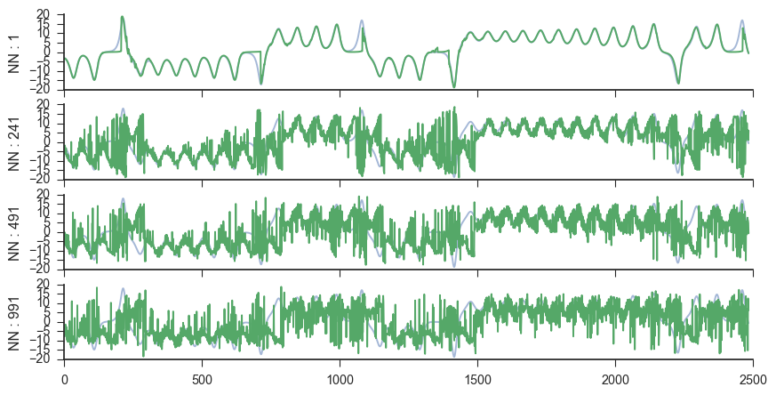

Quick Start¶
In order to illustrate how this package works, we start with the example in the videos above. The lorenz system takes the form of :
Here, we are going to make forecasts of the x time series. Note that this series, while completely deterministic, is a classic chaotic system. This means that making forecasts into the future is going to be difficult as small changes in the initial conditions can lead to drastically different trajectories of the system.
There is a function in skedm.data to reproduce these time series. For example:
import skedm.data as data
X = data.lorenz()[:,0] #only going to use the x values

The next step is to calculate the mutual information between the time series and the shifted time series. This determines the lag value for the embedding. The first minimum in the mutual information can be thought of as jumping far enough away that there is new information gained. A more useful thought construct might be to think of it as the first minimum in the autocorrelation. Mutual information, however, is better than autocorrelation for picking the lag value. The mutual information calculation can be done using the embed class provided by skedm.
import skedm as edm
E = edm.Embed(X) #initiate the class
max_lag = 100
mi = E.mutual_information(max_lag)

The first minimum of the mutual information is at lag=18. This is the lag that will be used to rebuild a shadow manifold. This is done by the embed_vectors_1d method. A longer discussion about embedding dimension (how the value for embed is chosen) is found in the next section.
lag = 18
embed = 3
predict = 36 #predicting out to double to lag
X,y = E.embed_vectors_1d(lag,embed,predict)

The plot above is showing only X[:,0] and X[:,1]. This embedding preserves the geometric features of the original attractor.
Now that we embed the time series, all that is left to do is check the forecast skill as a function of near neighbors. First we split it into a training set and testing set. Additionally, we will initiate the class.
#split it into training and testing sets
train_len = int(.75*len(X))
Xtrain = X[0:train_len]
ytrain = y[0:train_len]
Xtest = X[train_len:]
ytest = y[train_len:]
weights = 'distance' #use a distance weighting for the near neighbors
M = edm.Regression(weights) # initiate the nonlinear forecasting class
Next, we need to fit the training data (rebuild the a shadow manifold) and make predictions for the test set. (22 seconds on a macbook air)
M.fit(Xtrain, ytrain) #fit the data (rebuilding the attractor)
nn_list = np.arange(1,200,dtype='int') #first 200 NN
ypred = M.predict(Xtest, nn_list)
score = M.score(ytest) #score

As can be seen from the image above, the highest forecast skill is located at low numbers of near neighbors and low forecast distances. In order to view the actual predictions for different numbers of near neighbors we can do the following:
fig,axes = plt.subplots(4,figsize=(10,5),sharex=True,sharey=True)
ax = axes.ravel()
ax[0].plot(ytest[:,35],alpha=.5)
ax[0].plot(ypred[0][:,35])
ax[0].set_ylabel('NN : ' + str(nn_list[0]))
ax[1].plot(ytest[:,35],alpha=.5)
ax[1].plot(ypred[24][:,35])
ax[1].set_ylabel('NN : ' + str(nn_list[24]))
ax[2].plot(ytest[:,35],alpha=.5)
ax[2].plot(ypred[49][:,35])
ax[2].set_ylabel('NN : ' + str(nn_list[49]))
ax[3].plot(ytest[:,35],alpha=.5)
ax[3].plot(ypred[99][:,35])
ax[3].set_ylabel('NN : ' + str(nn_list[99]))
sns.despine()
As expected, the forecast accuracy decreases as more and more near neighbors are averaged together to make a prediction.
Additionally, instead of averaging near neighbors, it is possible to look at the forecast skill of each near neighbor. This is visualized against the average distance to that point. This is computed as:
M.fit(Xtrain, ytrain) #fit the data (rebuilding the attractor)
nn_list = np.arange(1,200,dtype='int')
ypred = M.predict_individual(Xtest, nn_list)
score = M.score(ytest) #score
Likewise, we can look at the actual forecast made by the algorithm and compare it to the actual evolution of the time series.
As we can see, by not averaging the near neighbors, the forecast skill decreases and the actual forecast made becomes quite noisy, This is because we are no grabbing points that are not nearby in the space to make predictions. This should intuitively do worse than picking nearby regions.